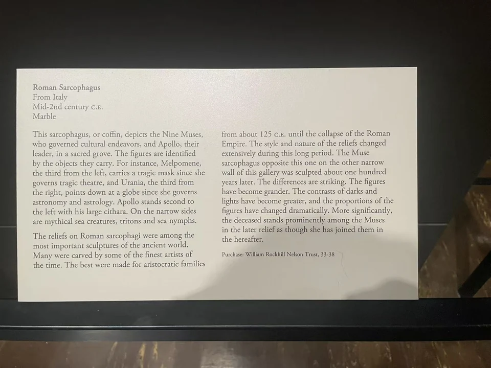

ROMAN SARCOPHAGI / R16
阿波罗与九缪斯石棺
乐器、面具和球体分布在长列人物之间，让文化活动各有可辨的形状。

- 年代
- 150—180年
- 材料
- 卡拉拉大理石
- 收藏
- 纳尔逊—阿特金斯艺术博物馆
- 观看地点
- 纳尔逊—阿特金斯艺术博物馆 · 堪萨斯城
- 馆藏号
- 33-38
持物引导视线
现场展牌将从左数第二位、持大型弦乐器的男子识为阿波罗；其余九位缪斯围绕他展开。人物之间的树干与不同方向的衣褶，使这列立像带着林间相会的节奏。右部指向球体的动作和左部的戏剧面具，都是能从整幅继续追踪的线索。
与另一口缪斯石棺并看
这件与馆内87-21号石棺可以比较：较晚那件把亡者放进缪斯的行列，人物也更高大，深刻衣褶制造更强的明暗。区别涉及纪念方式与构图选择。33-38于1933年由博物馆经Harold Woodbury Parsons从Brummer Gallery及Jacob Hirsch购入。 [22]
现场展签 · 1张

资料与来源
断代、收藏与文献说明
现行馆方目录定150—180年，现场旧展牌概称2世纪中期。具体人物位置据现场展牌1939，官网现行页未重复图像说明。 [22]